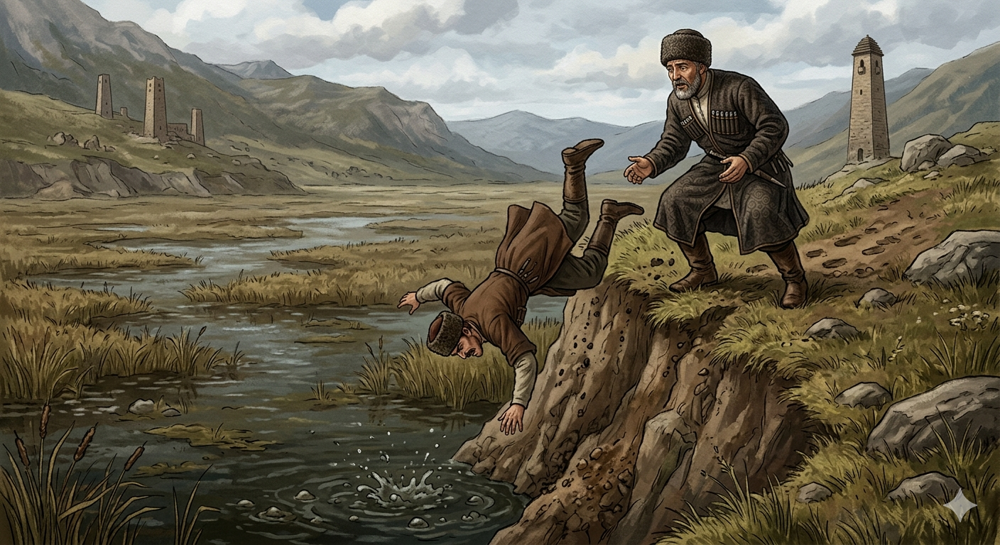

И.А. Дахкильгов. Хьехаме дувцарш - поучительные рассказы-притчи.
И.А. Дахкильгов. Хьехаме дувцарш - поучительные рассказы-притчи. Из ингушского фольклора.

Баьчох бода тийшаболх
Ушала йисте, лакхача берда т1а латташ хиннав цхьа къонах. Даьлага кхайкхаш оалаш хиннав из: “Тийшаболх ше баьчох г1олба! Тийшаболх ше баьчох г1олба!..” Т1ехвоалача цхьан питамеча къонахчоа хезад уж дешаш: “Аз гойтаргда хьона 1а яхар дош доацалга”, - аьнна цу къонахчоа т1ехьашкара д1ат1аведдав из, ушала чу из чукхосса дага волаш. Шийгада-а латтача къонахчоа б1аргадейнад т1ехьашкара ц1аьхха гучадаьнна цхьан сага 1индарг1а. Из гушшехьа а 1оте1ав из. Цу т1ехьашка т1аведда питаме саг, 1оте1ача къонахчун т1аг1олла д1а а керча, лакхача берда т1ара “т1олх” аьнна, ше ма водда б1ехача ушала чу вахав. Циггач са а хаьдад цун. Берда т1а латтачо аьннад т1аккха: Баьчох бода тийшаболх.
РУССКИЙ
За подлость воздается подлецу
Некий мужчина стоял на высоком берегу болота и, обращаясь к Богу, говорил: “Пусть за подлость воздастся тому, кто ее совершит, пусть за подлость воздастся тому, кто ее совершит!..” Проходил мимо некий подлючий человек. Услышав молящегося, он про себя сказал: “Я покажу тебе, что подлость остается без возмездия”. С этой целью он бросился к тому мужчине сзади, чтобы сбросить его в болото. Ничего не подозревавший мужчина заметил внезапно появившуюся человеческую тень, и тут же пригнулся. Подлый человек кувыркнулся через него, с высокого берега влетел в грязное болото и сгинул в нем. Тогда стоявший на берегу мужчина сказал: “За подлость воздается подлецу”.
ENGLISH
НОХЧИЙН
ПОГОВОРКИ